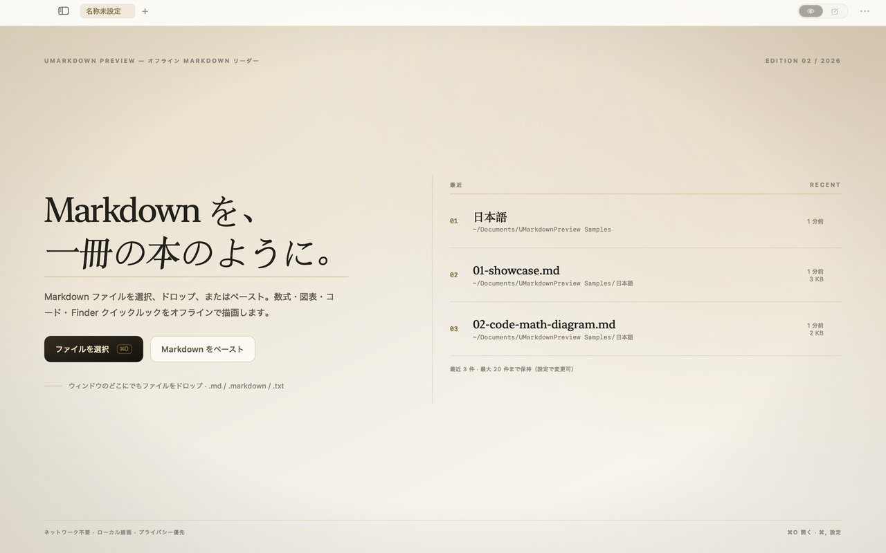
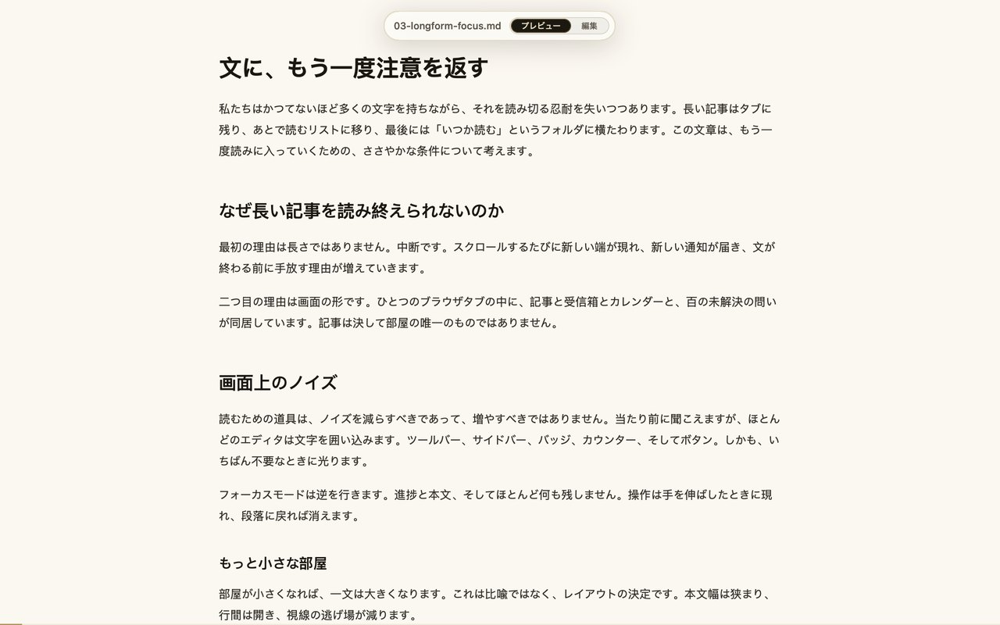
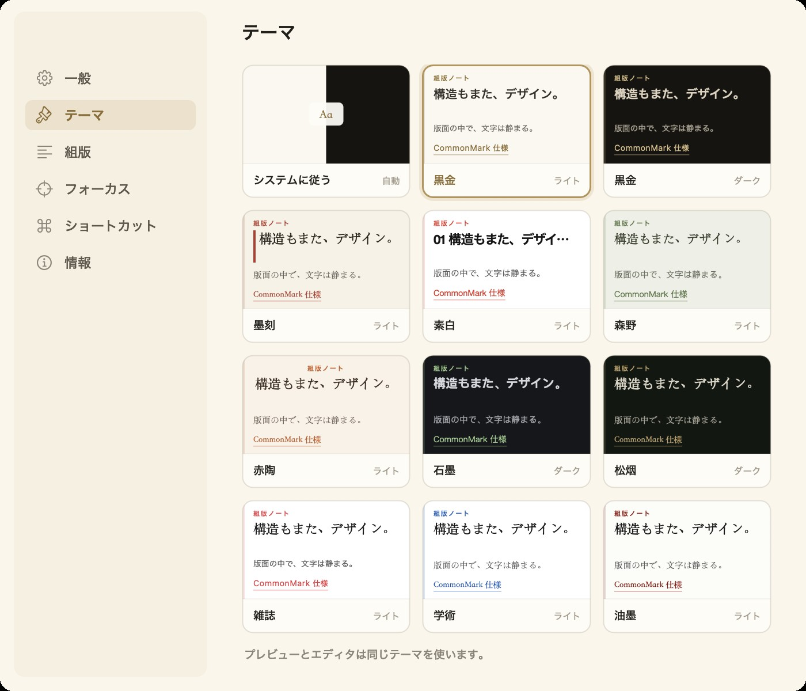
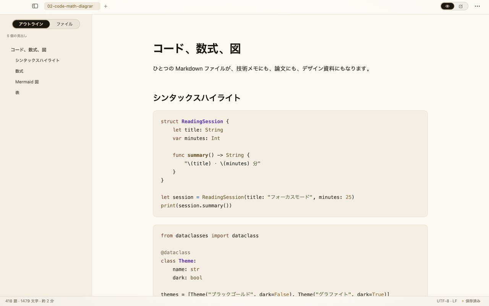
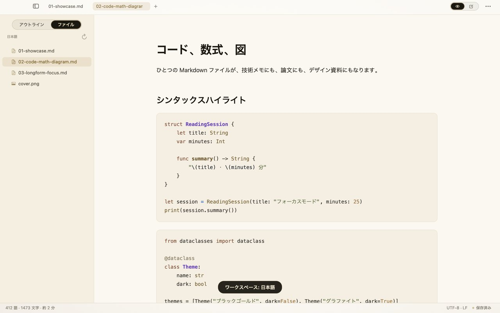

オフライン Markdown リーダー · macOS
Markdown を、本のように読む。
静かでネイティブな macOS 用 Markdown リーダー兼エディタ。黒金のデザイン、12 のテーマ、フォルダワークスペース、数式と図、そして読書の邪魔をしない静かな空間。

01 — 読む
もっと静かな読書空間。
ウィンドウが退き、本文、明快なアウトライン、そして読んだ位置を示す金色の細い線だけが残ります。
- 01
フォーカスモード
⌘⇧F を押すと、余分な枠が消えて段落だけになります。上部には読書進捗のカプセル。操作は手を伸ばしたときだけ現れます。
- 02
12 のテーマ
システムに従うか、ブラックゴールド（ライト/ダーク）、宋版朱印、スイスホワイト、セージフィールド、テラコッタ、グラファイト、パインスモーク、マガジン、アカデミック、インクから選べます。
- 03
ネイティブな組版
暖かな紙色、設定可能なアウトライン、Retina でも 1× でも鮮明な文字。

テーマ
ひとつの文書に、12 の見方。
プレビューとエディタは同じテーマを共有します。一度変えれば、読書空間全体が変わります。

02 — 書く
注意を一文の内側に。
編集は機械の操作であるべきではありません。タイプライターモード、オートセーブ、プレビューと一致するシンタックスハイライト。
- 01
タイプライターモード
カーソルは画面の中央付近に留まり、長い文書でも視線が下へ引きずられません。
- 02
オートセーブ
入力が一秒止まると、静かにファイルへ書き込みます。
- 03
エディタのシンタックスハイライト
コードフェンスはエディタでも色分けされます。引用や入れ子リストの中も同様です。

03 — ワークスペース
ようやくワークスペースらしく。
ファイルだけでなく、フォルダを開く。サイドバーは階層ごとに読み込み、タブは複数の文書を手元に置き、コマンドパレットは数回のキーで何でも見つけます。
- 01
フォルダワークスペース
階層読み込みのファイルツリー、インライン名前変更、Finder に表示、ここでターミナルを開く。
- 02
タブとセッション復元
終了して再度開くと、ウィンドウとタブが元の場所に戻ります。
- 03
クイックオープン
⌘⇧P で磨りガラスのコマンドパレット。ファイルとコマンドをあいまい検索。

05 — プライバシー
プライバシーを、設計から。
すべての描画はあなたの Mac 上で完結します。アカウントも分析も追跡もありません。アプリはネットワーク要求を行わず、データを収集しません。
プライバシーポリシーを読む